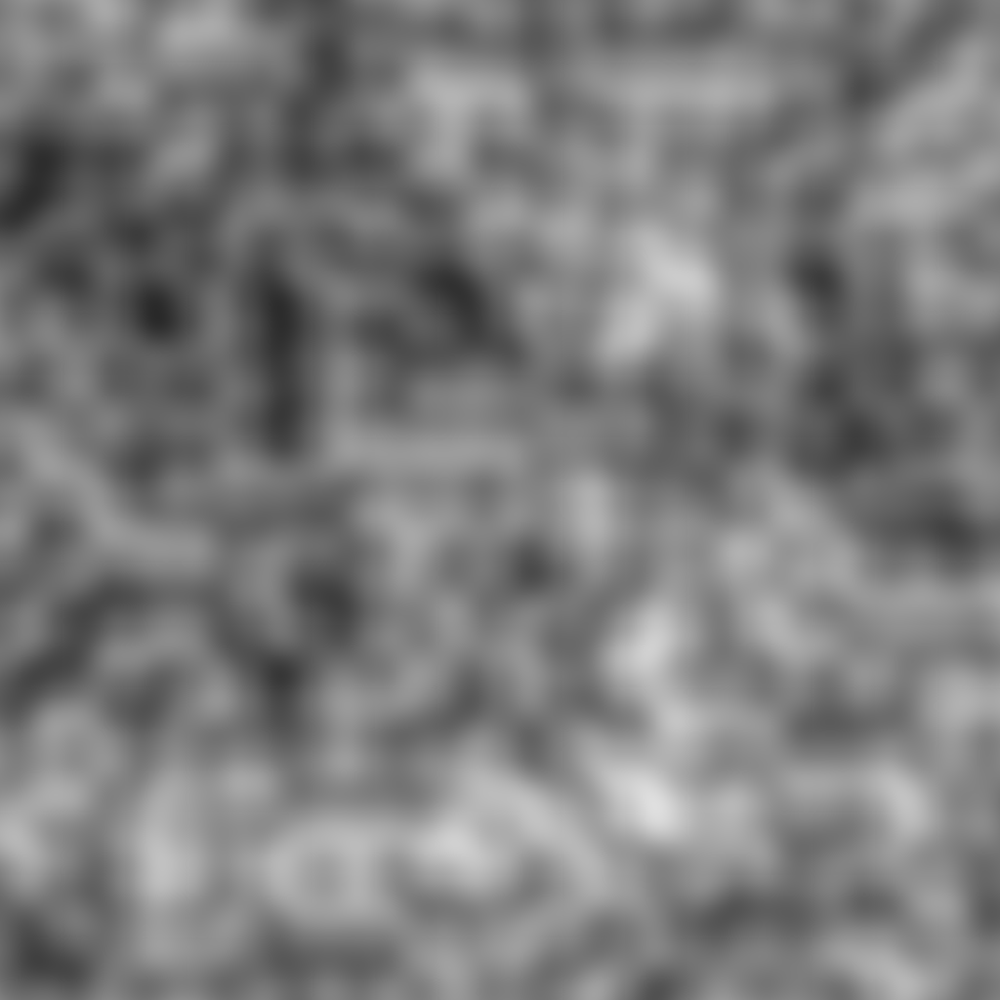
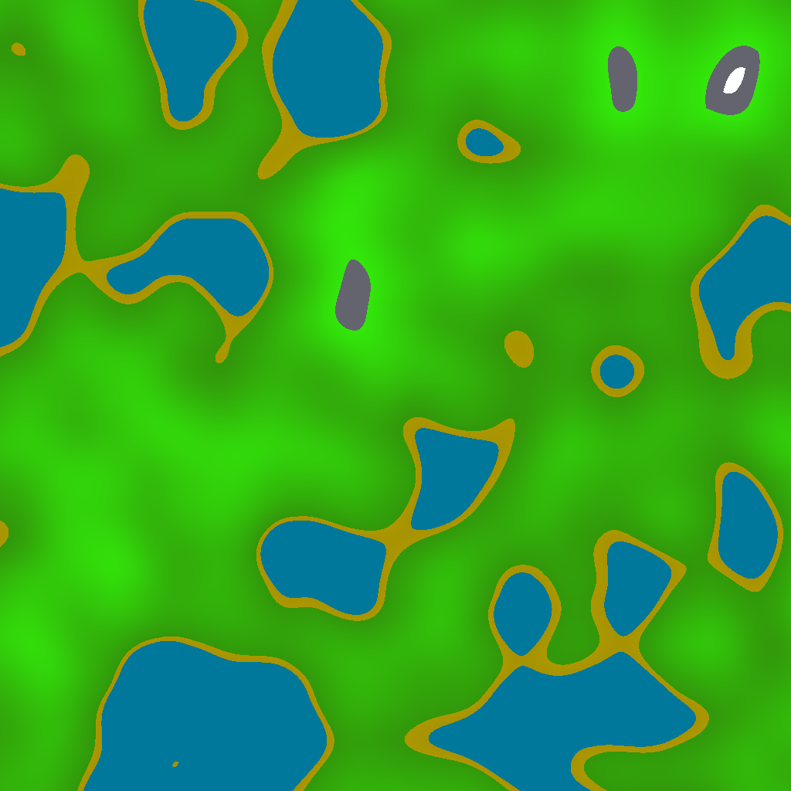

Projects
LineDrawer (2025/05-Present) | C++
The main point of this project was to solve my issue with AudioTracer. AudioTracer depends on files
including coordinates for lines (representing walls). I manually typed these files, which easily becomes
unbearable. Thus I developed LineDrawer to draw lines instead of typing them in.
I describe in the Github repo that there's a significant difference between this graphics editor and its
precedent, Tick-Rate-Map-Maker, which lies in their vector/raster nature. LineDrawer's increased complexity
is simply an opportunity for improvement. It's a chance to look back and say "how can I do better?" It's
a step ahead of where Tick-Rate-Map-Maker is, and it proceeds to grow in complexity, as I hope to make
this a functional, distributable software.
I think that LineDrawer is my most complete project so far, because it's specifically intended to become
a distributable app. I currently don't have much left in mind to add to the project, other than adding
options for changing export settings and specifying colours for the lines. These features shouldn't take
too long, as I have previous experience developing text-fields and colour palettes. The former I learned
in a past project, SpeedTyper, which is a typing game akin to MonkeyType. The latter I learned from
Tick-Rate-Map-Maker, where I think I last worked on a functional colour palette. I should mention
that the only available "colours" at the time were "green" and "erase".
What may be of interest to you is the purpose of developing a colour palette for LineDrawer, as it relates once again to the development of
AudioTracer. Essentially, in my pursuit to translate modern light ray-tracing advancements to
sound ray-tracing, I hope to replicate a sort of PBR (physically-based rendering). PBR in light
ray-tracers considers the "physical" qualities of materials to determine the reflection/absorption of light,
which results in the beautiful variety of textures which we see in real life. This effect is just as well
replicated by sound, as observed in the auditoy differences between a mountain range and a recording studio:
one is echo-ey, the other is not. These differences stem from physical differences in material, and so I
think it would be beneficial to implement.
AudioTracer (2025/03-Present) | C++
My favourite project so far. I felt ambitious thinking about this project, which employed advanced algorithmic
and mathematical knowledge. Ray-tracing was beyond my experience, let alone audio ray-tracing, but I
was eager to get this idea started.
Why audio? First off, it sounds cool (pun intended). Second, it's something new, and I needed something to stand
out. Much attention has already been paid to light ray-tracing, which has advanced immeasurably in the past few years.
It was about time that sound got some appreciation, because auditory immersion can be just as fascinating
as visual immersion. Have you ever watched Transformers? The transformations are intricately composed, yet I never
appreciated its beauty until recently. That and other examples of beatiful sound design drove me to build this
audio ray-tracer.
NoiseGenerator (2024/01-2025/07) | C++
This project (along with other projects, but this one especially) brings good memories.
When I first began developing NoiseGenerator, I was diving into the realm of
procedural generation,
specifically, procedural map generation. Popular games like Minecraft use it,
so I, in pursuit of experience in Game-Development, thought of implementing a procedural-generation algorithm.
Algorithms like such utilize "noise", Perlin Noise,
most recognizably, so I prioritized developing that algorithm. Development involved a lot
of time researching how the algorithm works, as I read online articles, watched Youtube videos,
and scoured through Stack Ovoerflow in order to realize how my algorithm should work.
It got to the point that I started working on this project during breaks at school.
Some of my friends would pass by and I would tell them about it. Checking in occasionally,
they would see how development was going, and I would have the chance to explain what
the program did and why I was doing it. Unsurprisingly, this developed my own
understanding, now that I had to put the abstract knowledge into words.
This project, being both an opportunity to learn and to connect, is important to me, for
that exact reason; the project brought about fond memories to me.
The photos below are samples resulting from the library, along with tweaking of certain colors.
"output" is a basic example of procedural map generation, as it uses Perlin Noise
along with parameters to determine what "biome" (presented with colors) the area would be.
Green -> Grass, Blue -> Water, Grey -> Stone, White -> Snow. The data for the photo is all
floating-point numbers, but when you turn them into familiar colors, they can easiliy represent
a full map. I enjoy graphics so much ;-;


2025
2024